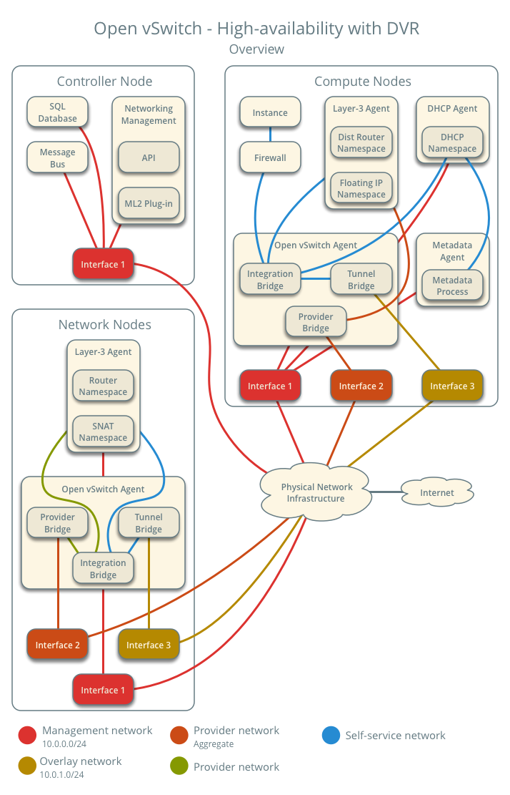
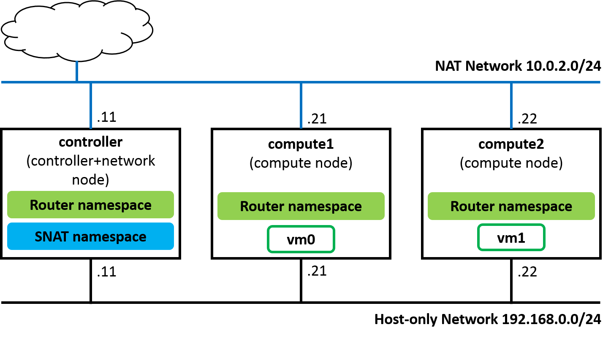
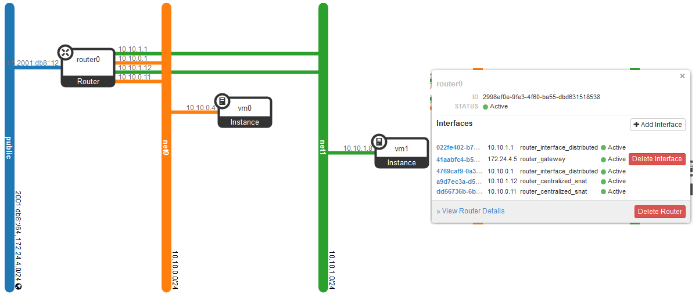
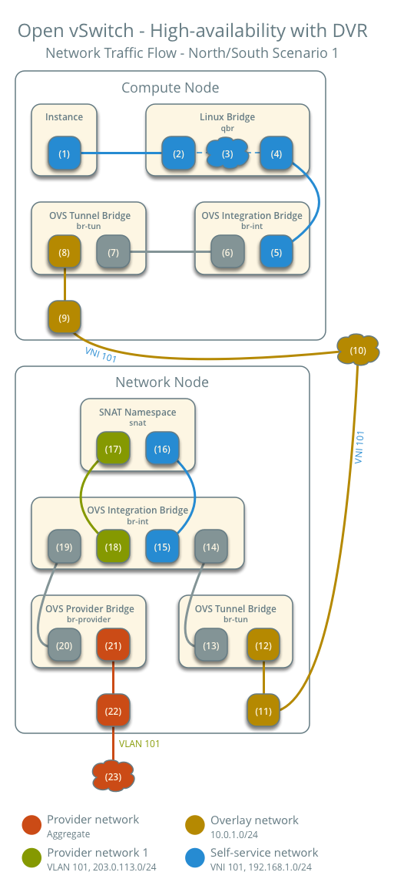

This document intends to explain how to deploy Devstack multi-node in Rocky with DVR enabling which is useful for actual operation and development.
Table of Contents
Architecture concept of High Availability with DVR [1]
Environment
Topology
Config network interface in /etc/network/interfaces
auto enp0s3 iface enp0s3 inet static address 10.0.2.11 netmask 255.255.255.0 gateway 10.0.2.2 dns-nameservers 8.8.8.8 8.8.4.4 auto enp0s9 iface enp0s9 inet static address 192.168.0.11 netmask 255.255.255.0
auto enp0s3 iface enp0s3 inet static address 10.0.2.21 netmask 255.255.255.0 gateway 10.0.2.2 dns-nameservers 8.8.8.8 8.8.4.4 auto enp0s9 iface enp0s9 inet static address 192.168.0.21 netmask 255.255.255.0
auto enp0s3 iface enp0s3 inet static address 10.0.2.22 netmask 255.255.255.0 gateway 10.0.2.2 dns-nameservers 8.8.8.8 8.8.4.4 auto enp0s9 iface enp0s9 inet static address 192.168.0.22 netmask 255.255.255.0
Note
If your Virtualbox machines stand behind proxy, you might need to set up no_proxy for host-only network that connects Openstack nodes internally.
export no_proxy=localhost,127.0.0.1,10.0.2.0/24,192.168.0.0/24
The values for Q_DVR_MODE is set to dvr_snat (controller or single node), or dvr (compute node in multi-node).
This is controller and network node, then n-cpu is disabled in this node
[[local|localrc]] ADMIN_PASSWORD=abc123 DATABASE_PASSWORD=abc123 RABBIT_PASSWORD=abc123 SERVICE_PASSWORD=$ADMIN_PASSWORD GIT_BASE=${GIT_BASE:-https://git.openstack.org} HOST_IP=192.168.0.11 LOGFILE=$DEST/logs/stack.sh.log LOGDAYS=2 #Disable Cinder disable_service c-api disable_service c-vol disable_service c-sch ####################################### #Config DVR SNAT MULTI_HOST=1 # Multi-node enabling #THIS IS CONTROLLER AND NETWORK ONLY, NOT COMPUTE !! disable_service n-cpu # Settings for DVR networking, DVR depends on vxlan and ml2/ovs Q_USE_SECGROUP=True Q_PLUGIN=ml2 Q_ML2_TENANT_NETWORK_TYPE=vxlan Q_DVR_MODE=dvr_snat # In controller node, enable dvr_snat [[post-config|/$Q_PLUGIN_CONF_FILE]] [agent] arp_responder=True ####################################### # Config Neutron services disable_service n-net enable_plugin neutron https://git.openstack.org/openstack/neutron # Enable Neutron services ENABLED_SERVICES=q-svc,q-agt,q-dhcp,q-l3,q-meta,q-metering # Enable logging service in Neutron enable_service q-log disable_service q-qos # Enable FWaaS V2 service enable_plugin neutron-fwaas https://git.openstack.org/openstack/neutron-fwaas master enable_plugin neutron-fwaas-dashboard https://git.openstack.org/openstack/neutron-fwaas-dashboard master enable_service q-fwaas-v2 # Enable logging for Firewall [[post-config|/etc/neutron/l3_agent.ini]] [AGENT] extensions = fwaas_v2,fwaas_v2_log
In order to enable distributed router on each compute-node, Neutron-metadata-agent and Neutron-L3-agent are both needed. So we need to add q-meta and q-l3 as well as q-agt on each computer node's local.conf file.
The values for Q_DVR_MODE are set to dvr_snat (controller or single node), or dvr (compute node in multi-node).
[[local|localrc]] HOST_IP=192.168.0.21 # change this per compute node LOGFILE=/opt/stack/logs/stack.sh.log GIT_BASE=${GIT_BASE:-https://git.openstack.org} ADMIN_PASSWORD=abc123 DATABASE_PASSWORD=abc123 RABBIT_PASSWORD=abc123 SERVICE_PASSWORD=abc123 ####################################### #Config DVR SNAT MULTI_HOST=1 # Multi-node enabling DATABASE_TYPE=mysql SERVICE_HOST=192.168.0.11 MYSQL_HOST=$SERVICE_HOST RABBIT_HOST=$SERVICE_HOST GLANCE_HOSTPORT=$SERVICE_HOST:9292 # Services that a compute node runs ENABLED_SERVICES=n-cpu,n-api-meta,c-vol,placement-client,placement-api,q-agt,q-l3,q-meta,neutron NOVA_VNC_ENABLED=True NOVNCPROXY_URL="http://$SERVICE_HOST:6080/vnc_auto.html" VNCSERVER_LISTEN=$HOST_IP VNCSERVER_PROXYCLIENT_ADDRESS=$VNCSERVER_LISTEN #Enable Neutron service disable_service n-net # Settings for DVR networking, DVR depends on vxlan and ml2/ovs Q_USE_SECGROUP=True Q_PLUGIN=ml2 Q_ML2_TENANT_NETWORK_TYPE=vxlan Q_DVR_MODE=dvr [[post-config|/$Q_PLUGIN_CONF_FILE]] [agent] arp_responder=True ####################################### #Disable Cinder disable_service c-api disable_service c-vol disable_service c-sch
Install devstack with ./stack.sh in controller, compute1 and compute2 node.
Verify service operation
$ openstack network agent list +--------------------------------------+--------------------+------------+-------------------+-------+-------+---------------------------+ | ID | Agent Type | Host | Availability Zone | Alive | State | Binary | +--------------------------------------+--------------------+------------+-------------------+-------+-------+---------------------------+ | 13535972-44dd-42f0-af66-6504de74f02b | Open vSwitch agent | compute1 | None | :-) | UP | neutron-openvswitch-agent | | 23a89fa2-f2c9-45b2-be7d-8dfe3402ba02 | Open vSwitch agent | compute2 | None | :-) | UP | neutron-openvswitch-agent | | 404d95e9-a5c8-4804-953e-240d7bb299f6 | Metadata agent | compute1 | None | :-) | UP | neutron-metadata-agent | | 501ff96b-8459-4941-a65d-df5bbd2dfa33 | L3 agent | compute2 | nova | :-) | UP | neutron-l3-agent | | 5ece9239-406a-4b76-862e-9ab6e85c1791 | Metadata agent | controller | None | :-) | UP | neutron-metadata-agent | | 5f7130d1-77b7-4cc7-a6e6-f91c738de787 | Metering agent | controller | None | :-) | UP | neutron-metering-agent | | 77f4602d-7f1b-4632-95e9-7a39cdc2a2ff | DHCP agent | controller | nova | :-) | UP | neutron-dhcp-agent | | 8f8cc18c-5d46-4d6c-b0df-78753accec58 | Open vSwitch agent | controller | None | :-) | UP | neutron-openvswitch-agent | | ba83cfa3-c655-4951-8d3d-99c6de065e27 | L3 agent | controller | nova | :-) | UP | neutron-l3-agent | | d691a10f-4f7a-42ba-bdda-640376e50d12 | L3 agent | compute1 | nova | :-) | UP | neutron-l3-agent | | dae766f2-8cf2-449b-b65a-5fc59e11621e | Metadata agent | compute2 | None | :-) | UP | neutron-metadata-agent | +--------------------------------------+--------------------+------------+-------------------+-------+-------+---------------------------+
Note
$ openstack compute service list +----+------------------+------------+----------+---------+-------+----------------------------+ | ID | Binary | Host | Zone | Status | State | Updated At | +----+------------------+------------+----------+---------+-------+----------------------------+ | 3 | nova-scheduler | controller | internal | enabled | up | 2018-10-09T07:00:40.000000 | | 6 | nova-consoleauth | controller | internal | enabled | up | 2018-10-09T07:00:44.000000 | | 7 | nova-conductor | controller | internal | enabled | up | 2018-10-09T07:00:47.000000 | | 1 | nova-conductor | controller | internal | enabled | up | 2018-10-09T07:00:48.000000 | | 2 | nova-compute | compute1 | nova | enabled | up | 2018-10-09T07:00:49.000000 | | 3 | nova-compute | compute2 | nova | enabled | up | 2018-10-09T07:00:44.000000 | +----+------------------+------------+----------+---------+-------+----------------------------+
Note
To disable/enable compute service in compute node
$ openstack compute service set --disable compute2 nova-compute $ openstack compute service list +----+------------------+------------+----------+----------+-------+----------------------------+ | ID | Binary | Host | Zone | Status | State | Updated At | +----+------------------+------------+----------+----------+-------+----------------------------+ | 3 | nova-scheduler | controller | internal | enabled | up | 2018-10-09T07:03:20.000000 | | 6 | nova-consoleauth | controller | internal | enabled | up | 2018-10-09T07:03:24.000000 | | 7 | nova-conductor | controller | internal | enabled | up | 2018-10-09T07:03:17.000000 | | 1 | nova-conductor | controller | internal | enabled | up | 2018-10-09T07:03:18.000000 | | 2 | nova-compute | compute1 | nova | enabled | up | 2018-10-09T07:03:19.000000 | | 3 | nova-compute | compute2 | nova | disabled | up | 2018-10-09T07:03:24.000000 | +----+------------------+------------+----------+----------+-------+----------------------------+
Add the compute node to the cell database [2]
$ openstack hypervisor list +----+---------------------+-----------------+--------------+-------+ | ID | Hypervisor Hostname | Hypervisor Type | Host IP | State | +----+---------------------+-----------------+--------------+-------+ | 1 | compute1 | QEMU | 192.168.0.21 | up | | 2 | compute2 | QEMU | 192.168.0.22 | up | +----+---------------------+-----------------+--------------+-------+
$ su -s /bin/sh -c "nova-manage cell_v2 discover_hosts --verbose" stack Password: /usr/local/lib/python2.7/dist-packages/psycopg2/__init__.py:144: UserWarning: The psycopg2 wheel package will be renamed from release 2.8; in order to keep installing from binary please use "pip install psycopg2-binary" instead. For details see: <http://initd.org/psycopg/docs/install.html#binary-install-from-pypi>. """) Found 2 cell mappings. Skipping cell0 since it does not contain hosts. Getting computes from cell 'cell1': 1d71bb46-e9f3-48b4-8f2c-5b835fbb5420 Found 2 unmapped computes in cell: 1d71bb46-e9f3-48b4-8f2c-5b835fbb5420
The following script is able to deploy Neutron networks with DVR router
# Create net0 with subnet subnet0 openstack network create --share net0 openstack subnet create subnet0 --ip-version 4 --gateway 10.10.0.1 --network net0 --subnet-range 10.10.0.0/24 # Create net1 with subnet subnet1 openstack network create --share net1 openstack subnet create subnet1 --ip-version 4 --gateway 10.10.1.1 --network net1 --subnet-range 10.10.1.0/24 # Create router router0 and attach subnet0, subnet1 to router0 openstack router create router0 openstack router add subnet router0 subnet0 openstack router add subnet router0 subnet1 # Create vm0, vm1 and attach to net0, net1 openstack server create vm0 --image cirros-0.3.5-x86_64-disk --flavor m1.tiny --network net0 --availability-zone nova:compute1:compute1 openstack server create vm1 --image cirros-0.3.5-x86_64-disk --flavor m1.tiny --network net1 --availability-zone nova:compute2:compute2
The Neutron networks and router interfaces should look like:
In DVR implementation, SNAT namespace is created in network node by default.
From controller,
$ openstack router list +--------------------------------------+---------+--------+-------+-------------+-------+----------------------------------+ | ID | Name | Status | State | Distributed | HA | Project | +--------------------------------------+---------+--------+-------+-------------+-------+----------------------------------+ | 2998ef0e-9fe3-4f60-ba55-dbd631518538 | router0 | ACTIVE | UP | True | False | 2b6956584a4a456fafe52707c5961f07 | +--------------------------------------+---------+--------+-------+-------------+-------+----------------------------------+ $ ip netns snat-2998ef0e-9fe3-4f60-ba55-dbd631518538 qrouter-2998ef0e-9fe3-4f60-ba55-dbd631518538 qdhcp-aa938ea7-fb9b-4aaa-a78a-2ca02624e737 fip-cd1abffe-1b36-49db-944d-5353e930a4df qdhcp-1f9030b6-50ff-4c24-9152-c48fe6eee55b
In compute1 and compute2, qrouter-* namespace is also created. Note that there is no SNAT namespace in compute nodes.
$ virsh list Id Name State ---------------------------------------------------- 1 instance-00000002 running $ ip netns fip-cd1abffe-1b36-49db-944d-5353e930a4df qrouter-2998ef0e-9fe3-4f60-ba55-dbd631518538
In this guide, we set up North-South traffic to check SNAT operation in DVR router. In particular, we ping from 10.10.0.4 (vm0) to external network address 172.24.4.1 (br-ex). The results show as bellow:
$ ifconfig eth0 Link encap:Ethernet HWaddr FA:16:3E:2D:4C:F6 inet addr:10.10.0.4 Bcast:10.0.0.255 Mask:255.255.255.0 inet6 addr: fe80::f816:3eff:fe2d:4cf6/64 Scope:Link UP BROADCAST RUNNING MULTICAST MTU:1450 Metric:1 RX packets:95 errors:0 dropped:0 overruns:0 frame:0 TX packets:104 errors:0 dropped:0 overruns:0 carrier:0 collisions:0 txqueuelen:1000 RX bytes:9662 (9.4 KiB) TX bytes:10258 (10.0 KiB) lo Link encap:Local Loopback inet addr:127.0.0.1 Mask:255.0.0.0 inet6 addr: ::1/128 Scope:Host UP LOOPBACK RUNNING MTU:16436 Metric:1 RX packets:0 errors:0 dropped:0 overruns:0 frame:0 TX packets:0 errors:0 dropped:0 overruns:0 carrier:0 collisions:0 txqueuelen:0 RX bytes:0 (0.0 B) TX bytes:0 (0.0 B) $ ping 172.24.4.1 PING 172.24.4.1 (172.24.4.1): 56 data bytes 64 bytes from 172.24.4.1: seq=0 ttl=63 time=2.559 ms 64 bytes from 172.24.4.1: seq=1 ttl=63 time=3.272 ms 64 bytes from 172.24.4.1: seq=2 ttl=63 time=2.416 ms --- 172.24.4.1 ping statistics --- 5 packets transmitted, 5 packets received, 0% packet loss round-trip min/avg/max = 2.128/2.555/3.272 ms
Iptables statistic change in SNAT namespace
$ sudo ip netns exec snat-2998ef0e-9fe3-4f60-ba55-dbd631518538 iptables -t nat -nvL Chain PREROUTING (policy ACCEPT 10 packets, 1256 bytes) pkts bytes target prot opt in out source destination 10 1256 neutron-l3-agent-PREROUTING all -- * * 0.0.0.0/0 0.0.0.0/0 Chain INPUT (policy ACCEPT 2 packets, 636 bytes) pkts bytes target prot opt in out source destination Chain OUTPUT (policy ACCEPT 0 packets, 0 bytes) pkts bytes target prot opt in out source destination 0 0 neutron-l3-agent-OUTPUT all -- * * 0.0.0.0/0 0.0.0.0/0 Chain POSTROUTING (policy ACCEPT 0 packets, 0 bytes) pkts bytes target prot opt in out source destination 8 620 neutron-l3-agent-POSTROUTING all -- * * 0.0.0.0/0 0.0.0.0/0 8 620 neutron-postrouting-bottom all -- * * 0.0.0.0/0 0.0.0.0/0 Chain neutron-l3-agent-OUTPUT (1 references) pkts bytes target prot opt in out source destination Chain neutron-l3-agent-POSTROUTING (1 references) pkts bytes target prot opt in out source destination 0 0 ACCEPT all -- !qg-41aabfc4-b5 !qg-41aabfc4-b5 0.0.0.0/0 0.0.0.0/0 ! ctstate DNAT Chain neutron-l3-agent-PREROUTING (1 references) pkts bytes target prot opt in out source destination Chain neutron-l3-agent-float-snat (1 references) pkts bytes target prot opt in out source destination Chain neutron-l3-agent-snat (1 references) pkts bytes target prot opt in out source destination 8 620 neutron-l3-agent-float-snat all -- * * 0.0.0.0/0 0.0.0.0/0 8 620 SNAT all -- * qg-41aabfc4-b5 0.0.0.0/0 0.0.0.0/0 to:172.24.4.5 0 0 SNAT all -- * * 0.0.0.0/0 0.0.0.0/0 mark match ! 0x2/0xffff ctstate DNAT to:172.24.4.5 Chain neutron-postrouting-bottom (1 references) pkts bytes target prot opt in out source destination 8 620 neutron-l3-agent-snat all -- * * 0.0.0.0/0 0.0.0.0/0 /* Perform source NAT on outgoing traffic. */
The DVR communication scenarios could be devided into four types:
In this guide, we focus on North-South scenario with SNAT (Instance with fixed IP)
When DVR router is created with SNAT enabling, the following namespace is added:
In the case of SNAT, SNAT processing (iptables) is executed in snat-$router0_id namespace in network node
The Packet Flow should look like the following figure [3]:
| [1] | https://docs.openstack.org/neutron/pike/admin/deploy-ovs-ha-dvr.html#architecture |
| [2] | https://docs.openstack.org/ocata/install-guide-rdo/nova-compute-install.html#add-the-compute-node-to-the-cell-database |
| [3] | https://docs.openstack.org/neutron/pike/admin/deploy-ovs-ha-dvr.html#north-south-scenario-1-instance-with-a-fixed-ip-address |